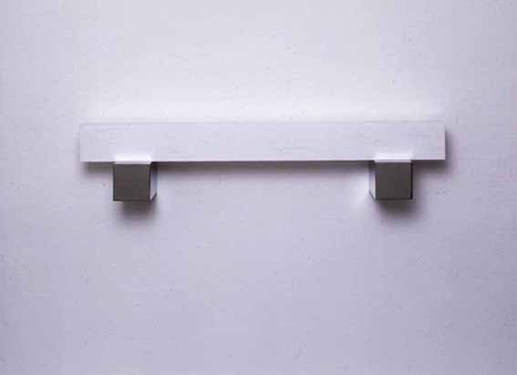
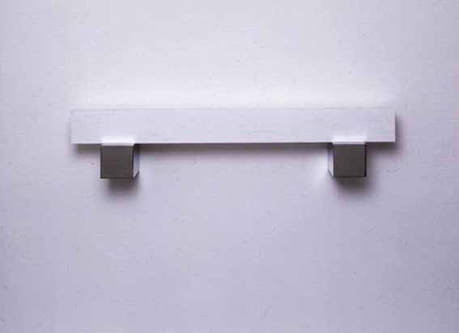

Galerie Anselm Dreher / Gerhard
Merz

Gerhard Merz, "o.T." (Meter), 1992
Thassosmarmor 10 x 100 x 10 auf 2 Chromstahlkonsolen (Inox)
10 x 10 x 20 cm; 6 + 2 a. p.
Galerie Anselm Dreher / Gerhard Merz

Gerhard Merz, "o.T." (Meter), 1992
Thassosmarmor 10 x 100 x 10 auf 2 Chromstahlkonsolen (Inox)
10 x 10 x 20 cm; 6 + 2 a. p.